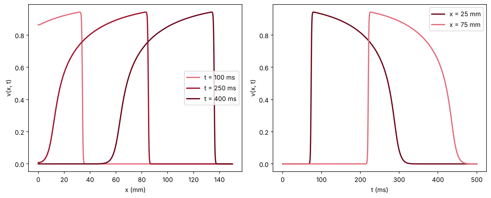
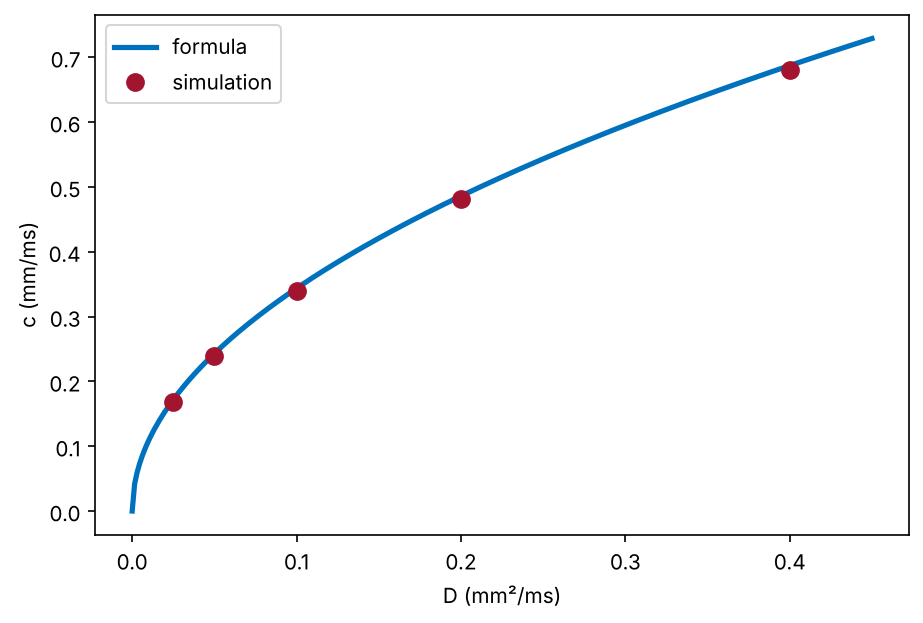

Chapter 5 · Outlook: Propagation of Excitation in Cardiac Tissue
5.2Traveling Waves
On a fiber the excitation travels as a pulse with fixed shape and speed. For the front, the speed c = √(D/(2τin)) (1 − 3vs*) can be given exactly; it grows with the square root of the coupling D. The programs use D = 0.1 mm2/ms, Δx = 0.1 mm, and Δt = 0.01 ms.
For each figure of the section you will find the program that produces it. Change parameters and initial values and observe what happens. Figure and equation numbers refer to the book.
Fig. 5.2
A pulse on the fiber
∂v/∂t = D ∂2v/∂x2 + h v2 (1 − v)/τin − v/τout + J(x, t)
Stimulus at the left end of a fiber 150 mm long. The times at which v reaches 0.5 at 25 and 75 mm give c ≈ 0.34 mm/ms; with APD ≈ 227 ms the wavelength is about 77 mm.

# Fig. 5.2: A pulse on the fiber (book, Section 5.2, Eq. 5.2)
# cable equation with the Mitchell-Schaeffer model, fiber 150 mm, stimulus at the left end; method of lines with Euler method
# (c) 2026 Philipp Kügler · Program for the book "Dynamical Systems in the Life Sciences" · MIT License (see LICENSE)
using Printf, Plots
tin = 0.3; tout = 6.0; topen = 100.0; tclose = 115.0; vgate = 0.13 # parameters in ms
D = 0.1; dx = 0.1; dt = 0.01 # D in mm^2/ms, grid spacing in mm, time step in ms
L = 150.0; T = 500.0
N = round(Int, L / dx) + 1; x = dx .* (0:N-1)
v = zeros(N); h = ones(N)
reiz = x .<= 1.0 # stimulus J = 0.2 on the first millimeter for 2 ms
zeiten = [100.0, 250.0, 400.0]; schnapp = Dict{Int, Vector{Float64}}()
K = round(Int, T / dt); s25 = zeros(K); s75 = zeros(K); t_akt = fill(NaN, N)
lap = zeros(N)
for n in 0:K-1
t = n * dt
for z in zeiten
abs(t - z) < 1e-6 && (schnapp[round(Int, z)] = copy(v))
end
lap[2:end-1] .= v[3:end] .- 2 .* v[2:end-1] .+ v[1:end-2]
lap[1] = v[2] - v[1]; lap[end] = v[end-1] - v[end] # no flux across the boundary
dv = h .* v.^2 .* (1 .- v) ./ tin .- v ./ tout .+ D .* lap ./ dx^2
t < 2.0 && (dv[reiz] .+= 0.2)
dh = ifelse.(v .< vgate, (1 .- h) ./ topen, -h ./ tclose)
global v = v .+ dt .* dv; global h = h .+ dt .* dh
neu = isnan.(t_akt) .& (v .> 0.5); t_akt[neu] .= t + dt # time at which v first reaches 0.5
s25[n + 1] = v[251]; s75[n + 1] = v[751]
end
c = (x[751] - x[251]) / (t_akt[751] - t_akt[251])
ts = dt .* collect(1:K); a = ts[s75 .> 0.1]; apd = a[end] - a[1]
@printf("v = 0.5 at x = 25 mm after %.1f ms, at x = 75 mm after %.1f ms\n", t_akt[251], t_akt[751])
@printf("conduction velocity c = %.4f mm/ms, APD = %.1f ms, wavelength c APD = %.1f mm\n", c, apd, c * apd)
farben = [RGB(0.89, 0.44, 0.49), RGB(0.64, 0.08, 0.18), RGB(0.43, 0.04, 0.12)]
p1 = plot(xlabel = "x (mm)", ylabel = "v(x, t)")
for (j, z) in enumerate((100, 250, 400))
plot!(p1, x, schnapp[z], color = farben[j], lw = 2, label = "t = $z ms")
end
p2 = plot(ts, s25, color = farben[3], lw = 2, label = "x = 25 mm", xlabel = "t (ms)", ylabel = "v(x, t)")
plot!(p2, ts, s75, color = farben[1], lw = 2, label = "x = 75 mm")
display(plot(p1, p2, layout = (1, 2), size = (900, 420)))% Fig. 5.2: A pulse on the fiber (book, Section 5.2, Eq. 5.2)
% cable equation with the Mitchell-Schaeffer model, fiber 150 mm, stimulus at the left end; method of lines with Euler method
% (c) 2026 Philipp Kügler · Program for the book "Dynamical Systems in the Life Sciences" · MIT License (see LICENSE)
tin = 0.3; tout = 6; topen = 100; tclose = 115; vgate = 0.13; % parameters in ms
D = 0.1; dx = 0.1; dt = 0.01; % D in mm^2/ms, grid spacing in mm, time step in ms
L = 150; T = 500;
N = round(L / dx) + 1; x = dx * (0:N-1);
v = zeros(1, N); h = ones(1, N);
reiz = x <= 1; % stimulus J = 0.2 on the first millimeter for 2 ms
schnapp = zeros(3, N); zeiten = [100 250 400];
K = round(T / dt); s25 = zeros(1, K); s75 = zeros(1, K); t_akt = nan(1, N);
for n = 0:K-1
t = n * dt;
j = find(abs(zeiten - t) < 1e-6); if ~isempty(j), schnapp(j, :) = v; end
lap = [v(2) - v(1), v(3:end) - 2 * v(2:end-1) + v(1:end-2), v(end-1) - v(end)]; % no flux across the boundary
dv = h .* v.^2 .* (1 - v) / tin - v / tout + D * lap / dx^2;
if t < 2, dv(reiz) = dv(reiz) + 0.2; end
dh = (v < vgate) .* (1 - h) / topen - (v >= vgate) .* h / tclose;
v = v + dt * dv; h = h + dt * dh;
neu = isnan(t_akt) & v > 0.5; t_akt(neu) = t + dt; % time at which v first reaches 0.5
s25(n + 1) = v(251); s75(n + 1) = v(751);
end
c = (x(751) - x(251)) / (t_akt(751) - t_akt(251));
ts = dt * (1:K); a = ts(s75 > 0.1); apd = a(end) - a(1);
fprintf('v = 0.5 at x = 25 mm after %.1f ms, at x = 75 mm after %.1f ms\n', t_akt(251), t_akt(751));
fprintf('conduction velocity c = %.4f mm/ms, APD = %.1f ms, wavelength c APD = %.1f mm\n', c, apd, c * apd);
farben = [0.89 0.44 0.49; 0.64 0.08 0.18; 0.43 0.04 0.12];
subplot(1, 2, 1); hold on
for j = 1:3, plot(x, schnapp(j, :), 'Color', farben(j, :), 'LineWidth', 2); end
hold off; xlabel('x (mm)'); ylabel('v(x, t)'); legend('t = 100 ms', 't = 250 ms', 't = 400 ms');
subplot(1, 2, 2);
plot(ts, s25, 'Color', farben(3, :), 'LineWidth', 2); hold on
plot(ts, s75, 'Color', farben(1, :), 'LineWidth', 2); hold off
xlabel('t (ms)'); ylabel('v(x, t)'); legend('x = 25 mm', 'x = 75 mm');# Fig. 5.2: A pulse on the fiber (book, Section 5.2, Eq. 5.2)
# cable equation with the Mitchell-Schaeffer model, fiber 150 mm, stimulus at the left end; method of lines with Euler method
# (c) 2026 Philipp Kügler · Program for the book "Dynamical Systems in the Life Sciences" · MIT License (see LICENSE)
import numpy as np
import matplotlib.pyplot as plt
tin, tout, topen, tclose, vgate = 0.3, 6.0, 100.0, 115.0, 0.13 # parameters in ms
D, dx, dt = 0.1, 0.1, 0.01 # D in mm^2/ms, grid spacing in mm, time step in ms
L, T = 150.0, 500.0
N = int(round(L / dx)) + 1; x = dx * np.arange(N)
v = np.zeros(N); h = np.ones(N)
reiz = x <= 1.0 # stimulus J = 0.2 on the first millimeter for 2 ms
schnapp = {}; s25, s75 = [], []; t_akt = np.full(N, np.nan)
for n in range(int(round(T / dt))):
t = n * dt
if round(t, 6) in (100.0, 250.0, 400.0): schnapp[round(t)] = v.copy()
lap = np.empty(N)
lap[1:-1] = v[2:] - 2 * v[1:-1] + v[:-2]
lap[0] = v[1] - v[0]; lap[-1] = v[-2] - v[-1] # no flux across the boundary
dv = h * v**2 * (1 - v) / tin - v / tout + D * lap / dx**2
if t < 2.0: dv[reiz] += 0.2
dh = np.where(v < vgate, (1 - h) / topen, -h / tclose)
v = v + dt * dv; h = h + dt * dh
neu = np.isnan(t_akt) & (v > 0.5); t_akt[neu] = t + dt # time at which v first reaches 0.5
s25.append(v[250]); s75.append(v[750])
i25, i75 = 250, 750
c = (x[i75] - x[i25]) / (t_akt[i75] - t_akt[i25])
ts = dt * np.arange(1, len(s75) + 1); s75 = np.array(s75); a = ts[s75 > 0.1]
apd = a[-1] - a[0]
print(f"v = 0.5 at x = 25 mm after {t_akt[i25]:.1f} ms, at x = 75 mm after {t_akt[i75]:.1f} ms")
print(f"conduction velocity c = {c:.4f} mm/ms, APD = {apd:.1f} ms, wavelength c APD = {c * apd:.1f} mm")
fig, axs = plt.subplots(1, 2, figsize=(11, 4.5))
for tz, farbe in zip((100, 250, 400), [(0.89, 0.44, 0.49), (0.64, 0.08, 0.18), (0.43, 0.04, 0.12)]):
axs[0].plot(x, schnapp[tz], color=farbe, lw=2, label=f"t = {tz} ms")
axs[0].set_xlabel("x (mm)"); axs[0].set_ylabel("v(x, t)"); axs[0].legend()
axs[1].plot(ts, s25, color=(0.43, 0.04, 0.12), lw=2, label="x = 25 mm")
axs[1].plot(ts, s75, color=(0.89, 0.44, 0.49), lw=2, label="x = 75 mm")
axs[1].set_xlabel("t (ms)"); axs[1].set_ylabel("v(x, t)"); axs[1].legend()
plt.tight_layout()
plt.show()# Fig. 5.2: A pulse on the fiber (book, Section 5.2, Eq. 5.2)
# cable equation with the Mitchell-Schaeffer model, fiber 150 mm, stimulus at the left end; method of lines with Euler method
# (c) 2026 Philipp Kügler · Program for the book "Dynamical Systems in the Life Sciences" · MIT License (see LICENSE)
tin <- 0.3; tout <- 6; topen <- 100; tclose <- 115; vgate <- 0.13 # parameters in ms
D <- 0.1; dx <- 0.1; dt <- 0.01 # D in mm^2/ms, grid spacing in mm, time step in ms
L <- 150; T <- 500
N <- round(L / dx) + 1; x <- dx * (0:(N - 1))
v <- numeric(N); h <- rep(1, N)
reiz <- x <= 1 # stimulus J = 0.2 on the first millimeter for 2 ms
zeiten <- c(100, 250, 400); schnapp <- matrix(0, 3, N)
K <- round(T / dt); s25 <- numeric(K); s75 <- numeric(K); t_akt <- rep(NA, N)
innen <- 2:(N - 1)
for (n in 0:(K - 1)) {
t <- n * dt
j <- which(abs(zeiten - t) < 1e-6); if (length(j)) schnapp[j, ] <- v
lap <- c(v[2] - v[1], v[innen + 1] - 2 * v[innen] + v[innen - 1], v[N - 1] - v[N]) # no flux across the boundary
dv <- h * v^2 * (1 - v) / tin - v / tout + D * lap / dx^2
if (t < 2) dv[reiz] <- dv[reiz] + 0.2
dh <- ifelse(v < vgate, (1 - h) / topen, -h / tclose)
v <- v + dt * dv; h <- h + dt * dh
neu <- is.na(t_akt) & v > 0.5; t_akt[neu] <- t + dt # time at which v first reaches 0.5
s25[n + 1] <- v[251]; s75[n + 1] <- v[751]
}
c <- (x[751] - x[251]) / (t_akt[751] - t_akt[251])
ts <- dt * (1:K); a <- ts[s75 > 0.1]; apd <- a[length(a)] - a[1]
cat(sprintf("v = 0.5 at x = 25 mm after %.1f ms, at x = 75 mm after %.1f ms\n", t_akt[251], t_akt[751]))
cat(sprintf("conduction velocity c = %.4f mm/ms, APD = %.1f ms, wavelength c APD = %.1f mm\n", c, apd, c * apd))
farben <- c(rgb(0.89, 0.44, 0.49), rgb(0.64, 0.08, 0.18), rgb(0.43, 0.04, 0.12))
par(mfrow = c(1, 2))
plot(x, schnapp[1, ], type = "l", col = farben[1], lwd = 2, ylim = c(0, 1), xlab = "x (mm)", ylab = "v(x, t)")
for (j in 2:3) lines(x, schnapp[j, ], col = farben[j], lwd = 2)
legend("topright", legend = sprintf("t = %d ms", zeiten), col = farben, lwd = 2)
plot(ts, s25, type = "l", col = farben[3], lwd = 2, ylim = c(0, 1), xlab = "t (ms)", ylab = "v(x, t)")
lines(ts, s75, col = farben[1], lwd = 2)
legend("topright", legend = c("x = 25 mm", "x = 75 mm"), col = farben[c(3, 1)], lwd = 2)Output in the command window
v = 0.5 at x = 25 mm after 73.4 ms, at x = 75 mm after 220.6 ms
conduction velocity c = 0.3396 mm/ms, APD = 226.9 ms, wavelength c APD = 77.1 mmFig. 5.3
Conduction velocity and coupling
c = √(D/(2τin)) (1 − 3vs*)
Simulations for five values of D and the formula. The simulation lies about 1 % below, because the channels already begin to close during the upstroke.

# Fig. 5.3: Conduction velocity and coupling (book, Section 5.2, Eq. 5.5)
# simulation of the cable equation for five values of D and the formula c = sqrt(D/(2 tin)) (1 - 3 vs)
# (c) 2026 Philipp Kügler · Program for the book "Dynamical Systems in the Life Sciences" · MIT License (see LICENSE)
using Printf, Plots
tin = 0.3; tout = 6.0; topen = 100.0; tclose = 115.0; vgate = 0.13 # parameters in ms
hc = 4 * tin / tout
vs = (1 - sqrt(1 - hc)) / 2 # threshold for h = 1
formel(D) = sqrt(D / (2 * tin)) * (1 - 3 * vs)
function geschwindigkeit(D; dx = 0.1, dt = 0.01, L = 60.0)
# fiber of length L, stimulus at the left end; c from the times at which v reaches 0.5 at 20 and 50 mm
N = round(Int, L / dx) + 1; v = zeros(N); h = ones(N); reiz = dx .* (0:N-1) .<= 1.0
i1 = round(Int, 20 / dx) + 1; i2 = round(Int, 50 / dx) + 1; t1 = NaN; t2 = NaN; n = 0; lap = zeros(N)
while isnan(t2)
lap[2:end-1] .= v[3:end] .- 2 .* v[2:end-1] .+ v[1:end-2]; lap[1] = v[2] - v[1]; lap[end] = v[end-1] - v[end]
dv = h .* v.^2 .* (1 .- v) ./ tin .- v ./ tout .+ D .* lap ./ dx^2
n * dt < 2.0 && (dv[reiz] .+= 0.2)
dh = ifelse.(v .< vgate, (1 .- h) ./ topen, -h ./ tclose)
v = v .+ dt .* dv; h = h .+ dt .* dh; n += 1
isnan(t1) && v[i1] > 0.5 && (t1 = n * dt)
isnan(t2) && v[i2] > 0.5 && (t2 = n * dt)
end
return 30.0 / (t2 - t1)
end
Ds = [0.025, 0.05, 0.1, 0.2, 0.4]
cs = [geschwindigkeit(D) for D in Ds]
for (D, c) in zip(Ds, cs)
@printf("D = %5.3f: simulation c = %.4f, formula c = %.4f mm/ms\n", D, c, formel(D))
end
Dd = range(0, 0.45, length = 300)
plot(Dd, formel.(Dd), color = RGB(0, 0.447, 0.741), lw = 2.5, label = "formula", xlabel = "D (mm²/ms)", ylabel = "c (mm/ms)", legend = :bottomright)
display(scatter!(Ds, cs, color = RGB(0.64, 0.08, 0.18), ms = 6, label = "simulation"))% Fig. 5.3: Conduction velocity and coupling (book, Section 5.2, Eq. 5.5)
% simulation of the cable equation for five values of D and the formula c = sqrt(D/(2 tin)) (1 - 3 vs)
% (c) 2026 Philipp Kügler · Program for the book "Dynamical Systems in the Life Sciences" · MIT License (see LICENSE)
tin = 0.3; tout = 6; topen = 100; tclose = 115; vgate = 0.13; % parameters in ms
hc = 4 * tin / tout;
vs = (1 - sqrt(1 - hc)) / 2; % threshold for h = 1
formel = @(D) sqrt(D / (2 * tin)) * (1 - 3 * vs);
dx = 0.1; dt = 0.01; L = 60;
Ds = [0.025 0.05 0.1 0.2 0.4]; cs = zeros(size(Ds));
for k = 1:numel(Ds)
D = Ds(k); % fiber of length L, stimulus at the left end
N = round(L / dx) + 1; v = zeros(1, N); h = ones(1, N); reiz = dx * (0:N-1) <= 1;
i1 = round(20 / dx) + 1; i2 = round(50 / dx) + 1; t1 = NaN; t2 = NaN; n = 0;
while isnan(t2)
lap = [v(2) - v(1), v(3:end) - 2 * v(2:end-1) + v(1:end-2), v(end-1) - v(end)];
dv = h .* v.^2 .* (1 - v) / tin - v / tout + D * lap / dx^2;
if n * dt < 2, dv(reiz) = dv(reiz) + 0.2; end
dh = (v < vgate) .* (1 - h) / topen - (v >= vgate) .* h / tclose;
v = v + dt * dv; h = h + dt * dh; n = n + 1;
if isnan(t1) && v(i1) > 0.5, t1 = n * dt; end
if isnan(t2) && v(i2) > 0.5, t2 = n * dt; end
end
cs(k) = 30 / (t2 - t1); % c from the times at 20 and 50 mm
fprintf('D = %5.3f: simulation c = %.4f, formula c = %.4f mm/ms\n', D, cs(k), formel(D));
end
Dd = linspace(0, 0.45, 300);
plot(Dd, formel(Dd), 'Color', [0 0.447 0.741], 'LineWidth', 2.5); hold on
plot(Ds, cs, 'o', 'Color', [0.64 0.08 0.18], 'MarkerFaceColor', [0.64 0.08 0.18], 'MarkerSize', 8); hold off
xlabel('D (mm^2/ms)'); ylabel('c (mm/ms)'); legend('formula', 'simulation', 'Location', 'southeast');# Fig. 5.3: Conduction velocity and coupling (book, Section 5.2, Eq. 5.5)
# simulation of the cable equation for five values of D and the formula c = sqrt(D/(2 tin)) (1 - 3 vs)
# (c) 2026 Philipp Kügler · Program for the book "Dynamical Systems in the Life Sciences" · MIT License (see LICENSE)
import numpy as np
import matplotlib.pyplot as plt
tin, tout, topen, tclose, vgate = 0.3, 6.0, 100.0, 115.0, 0.13 # parameters in ms
hc = 4 * tin / tout
vs = (1 - np.sqrt(1 - hc)) / 2 # threshold for h = 1
formel = lambda D: np.sqrt(D / (2 * tin)) * (1 - 3 * vs)
def geschwindigkeit(D, dx=0.1, dt=0.01, L=60.0):
"""Fiber of length L, stimulus at the left end; c from the times at which v reaches 0.5 at 20 and 50 mm."""
N = int(round(L / dx)) + 1; v = np.zeros(N); h = np.ones(N); reiz = dx * np.arange(N) <= 1.0
i1, i2 = int(round(20 / dx)), int(round(50 / dx)); t1 = t2 = None; n = 0
while t2 is None:
lap = np.empty(N); lap[1:-1] = v[2:] - 2 * v[1:-1] + v[:-2]; lap[0] = v[1] - v[0]; lap[-1] = v[-2] - v[-1]
dv = h * v**2 * (1 - v) / tin - v / tout + D * lap / dx**2
if n * dt < 2.0: dv[reiz] += 0.2
dh = np.where(v < vgate, (1 - h) / topen, -h / tclose)
v = v + dt * dv; h = h + dt * dh; n += 1
if t1 is None and v[i1] > 0.5: t1 = n * dt
if t2 is None and v[i2] > 0.5: t2 = n * dt
return 30.0 / (t2 - t1)
Ds = [0.025, 0.05, 0.1, 0.2, 0.4]
cs = [geschwindigkeit(D) for D in Ds]
for D, c in zip(Ds, cs):
print(f"D = {D:5.3f}: simulation c = {c:.4f}, formula c = {formel(D):.4f} mm/ms")
Dd = np.linspace(0, 0.45, 300)
plt.figure(figsize=(7, 4.5))
plt.plot(Dd, formel(Dd), color=(0, 0.447, 0.741), lw=2.5, label="formula")
plt.plot(Ds, cs, "o", color=(0.64, 0.08, 0.18), ms=8, label="simulation")
plt.xlabel("D (mm²/ms)"); plt.ylabel("c (mm/ms)"); plt.legend()
plt.show()# Fig. 5.3: Conduction velocity and coupling (book, Section 5.2, Eq. 5.5)
# simulation of the cable equation for five values of D and the formula c = sqrt(D/(2 tin)) (1 - 3 vs)
# (c) 2026 Philipp Kügler · Program for the book "Dynamical Systems in the Life Sciences" · MIT License (see LICENSE)
tin <- 0.3; tout <- 6; topen <- 100; tclose <- 115; vgate <- 0.13 # parameters in ms
hc <- 4 * tin / tout
vs <- (1 - sqrt(1 - hc)) / 2 # threshold for h = 1
formel <- function(D) sqrt(D / (2 * tin)) * (1 - 3 * vs)
geschwindigkeit <- function(D, dx = 0.1, dt = 0.01, L = 60) {
# fiber of length L, stimulus at the left end; c from the times at which v reaches 0.5 at 20 and 50 mm
N <- round(L / dx) + 1; v <- numeric(N); h <- rep(1, N); reiz <- dx * (0:(N - 1)) <= 1; innen <- 2:(N - 1)
i1 <- round(20 / dx) + 1; i2 <- round(50 / dx) + 1; t1 <- NA; t2 <- NA; n <- 0
while (is.na(t2)) {
lap <- c(v[2] - v[1], v[innen + 1] - 2 * v[innen] + v[innen - 1], v[N - 1] - v[N])
dv <- h * v^2 * (1 - v) / tin - v / tout + D * lap / dx^2
if (n * dt < 2) dv[reiz] <- dv[reiz] + 0.2
dh <- ifelse(v < vgate, (1 - h) / topen, -h / tclose)
v <- v + dt * dv; h <- h + dt * dh; n <- n + 1
if (is.na(t1) && v[i1] > 0.5) t1 <- n * dt
if (is.na(t2) && v[i2] > 0.5) t2 <- n * dt
}
30 / (t2 - t1)
}
Ds <- c(0.025, 0.05, 0.1, 0.2, 0.4)
cs <- sapply(Ds, geschwindigkeit)
for (k in seq_along(Ds)) cat(sprintf("D = %5.3f: simulation c = %.4f, formula c = %.4f mm/ms\n", Ds[k], cs[k], formel(Ds[k])))
Dd <- seq(0, 0.45, length.out = 300)
plot(Dd, formel(Dd), type = "l", col = rgb(0, 0.447, 0.741), lwd = 2.5, ylim = c(0, 0.8), xlab = "D (mm²/ms)", ylab = "c (mm/ms)")
points(Ds, cs, pch = 19, col = rgb(0.64, 0.08, 0.18), cex = 1.5)
legend("bottomright", legend = c("formula", "simulation"), col = c(rgb(0, 0.447, 0.741), rgb(0.64, 0.08, 0.18)), lwd = c(2.5, NA), pch = c(NA, 19))Output in the command window
D = 0.025: simulation c = 0.1689, formula c = 0.1718 mm/ms
D = 0.050: simulation c = 0.2397, formula c = 0.2430 mm/ms
D = 0.100: simulation c = 0.3396, formula c = 0.3436 mm/ms
D = 0.200: simulation c = 0.4807, formula c = 0.4859 mm/ms
D = 0.400: simulation c = 0.6801, formula c = 0.6872 mm/msTry it in the browser · no installation
Excitation wave on a fiber and a ring
Cable equation (5.2) with the Mitchell–Schaeffer model. Change the coupling D: the speed grows with √D. On the ring the excitation circulates only if the ring is long enough.